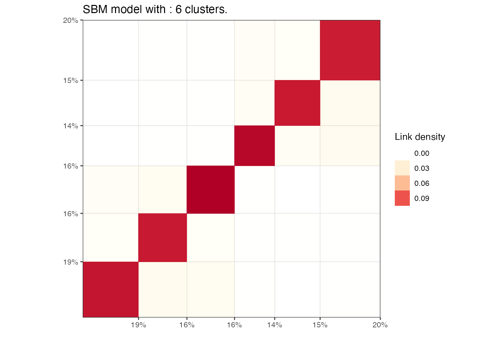
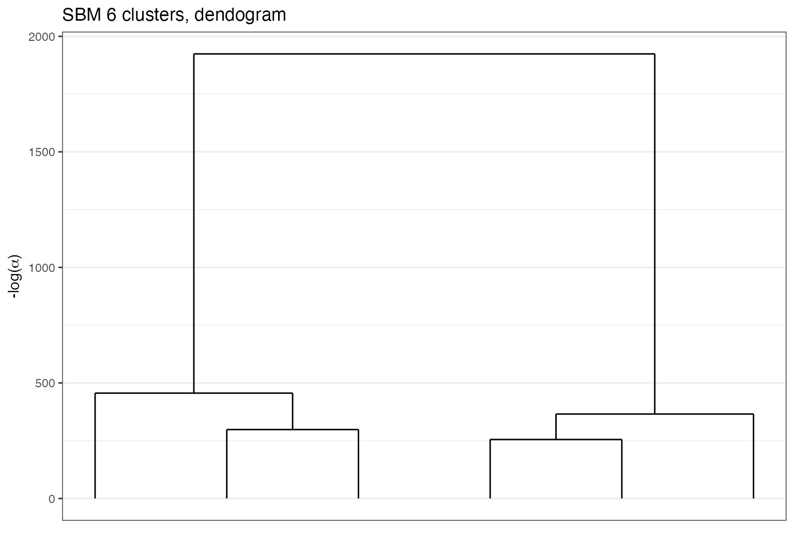
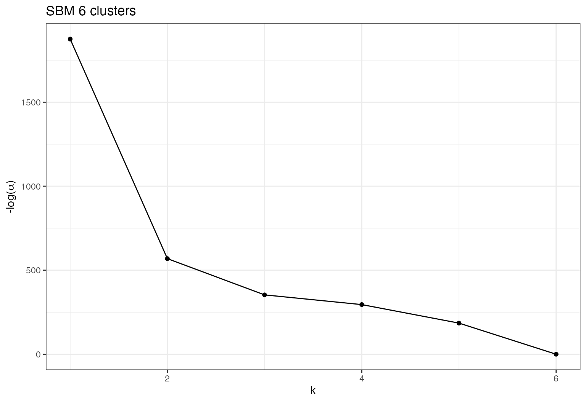
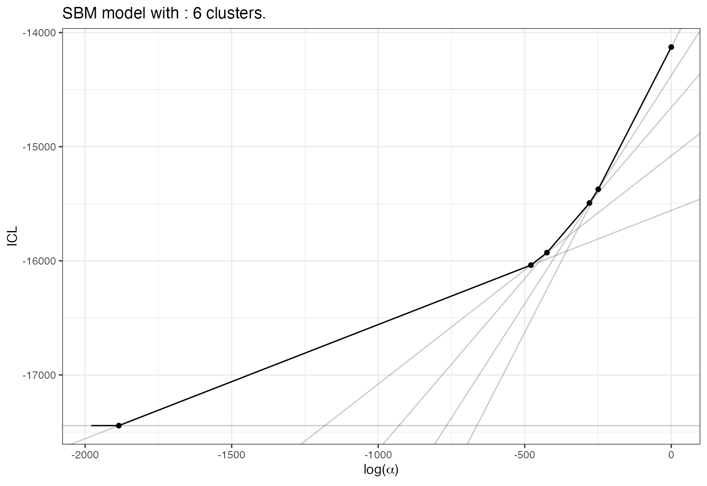
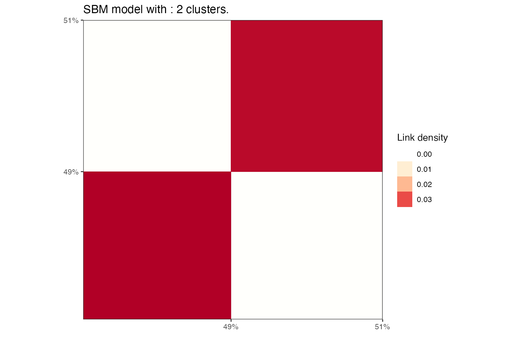

vignettes/graph-clustering-with-sbm.Rmd
graph-clustering-with-sbm.RmdLoads packages and set a future plan for parallel processing if you want.
Simulation of an SBM graph with a hierarchical structure.
N=400
K=6
pi=rep(1/K,K)
lambda = 0.1
lambda_o = 0.01
Ks=3
mu = bdiag(lapply(1:(K/Ks), function(k){matrix(lambda_o,Ks,Ks)+diag(rep(lambda,Ks))}))+0.001
sbm = rsbm(N,pi,mu)Perform the clustering with default model and algorithm. We specify to choose an sbm model since for squared sparse matrix the default is a dc-sbm model. An hybrid algorithm is selected by default and the default value for the parameter K is 20.
sol = greed(sbm$x,model=new("sbm"))
#> ------- directed SBM model fitting ------
#> ################# Generation 1: best solution with an ICL of -14136 and 7 clusters #################
#> ################# Generation 2: best solution with an ICL of -14095 and 6 clusters #################
#> ################# Generation 3: best solution with an ICL of -14095 and 6 clusters #################
#> ------- Final clustering -------
#> ICL clustering with a SBM model, 6 clusters and an icl of -14095.Plot the results using a block representation.
plot(sol,type='blocks')
Plot the results with a node link diagram.
plot(sol,type='nodelink')Or a dendrogram for selecting a smaller value for K.
plot(sol,type='tree')
Eventually study the evolution of \(-log(\alpha)\) with respect to \(K\).
plot(sol,type='path')
Or of ICL with respect to \(log(\alpha)\)
plot(sol,type='front')
And select a smaller value to extract a new solution.
